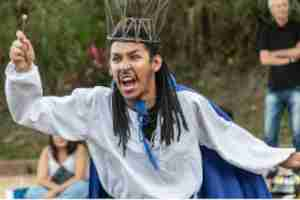
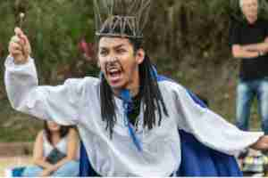
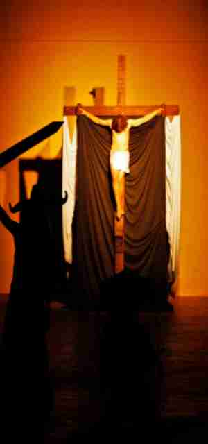
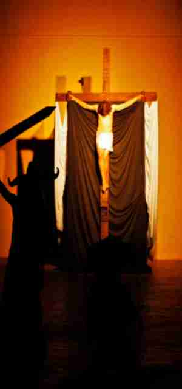

Página Inicial
A Companhia
Surgiu em janeiro de 2010, como uma oficina de teatro dirigida por Lisa Camargo no Centro Cultural Brasital, a Companhia de Eros é uma das grandes expressões artísticas da cidade de São Roque. Através da arte, a Cia Eros transmite histórias com viés social, político e artístico, conectando-se às pessoas de forma reflexiva, impactando a vida de quem assiste. Em 2018, os espaços públicos ao ar livre como trilhos de trens desativados, especialmente a Estação Ferroviária de São Roque, têm um papel de máxima importância no que tange à reinvenção do trabalho teatral, o estreitamento da relação entre ator/obra e o pensar das produções artísticas através de uma lente reflexiva e tendo em conta a sociedade contemporânea.
Veja maisPeças
Era uma vez

João Ninguém, um rapaz pobre, deixa sua terra de origem em busca de melhores oportunidades num país distópico. Os habitantes do país são marionetes de um “tal” Senhor Poder, dirigente autoritário, cujo lema é trabalho e consumo.
Isso tudo existe aonde?
Narração da vida de um cego que, por meio dos relatos de seu guia, Gigito, tomava conhecimento de um mundo bem diferente daquele em que vivia. Ao invés de relatar os horrores da guerra, Gigito falava sobre o mundo que existiria se não houvessem guerras.
Mais uma vez

Diante da morte de um amigo, um peão revolta-se contra o injusto sistema que sempre sacrifica os mais fracos. A partir daí ele encontra um peão inimigo e um velho cavalo, herói de outros tempos e juntos buscam restabelecer a paz no antigo reino de Navarro.
Mini-galeria

 


 
veja mais

veja mais
Depoimentos
Guilherme Veloso
Começou no teatro com o Projeto Teatro na Escola em 2011, no Bernardino. Recebeu convite da Lisa para entrar na Companhia já tendo experiência nessa arte…
Dani Campos
Começou na oficina inicial da Companhia aos 14 anos, e a partir dali iniciou o desenvolvimento do seu pensamento crítico…
Lelis Andrade

No início da Companhia trabalhava com a Lisa na assessoria de direção, chegou a dirigir algumas peças em conjunto com ela…
Em cartaz
Imagem referente a peça
Texto por:
Atualizado em:
próximas apresentações
Clique em "veja mais" e saiba os dias e horários das próximas apresentações.
Opa! Mais uma vez
Sinopse: Diante da morte de um amigo, um peão revolta-se contra o injusto sistema que sempre sacrifica os mais fracos. A partir daí ele encontra um peão inimigo e um velho cavalo, herói de outros tempos e juntos buscam restabelecer a paz no antigo reino de Navarro.
Veja mais